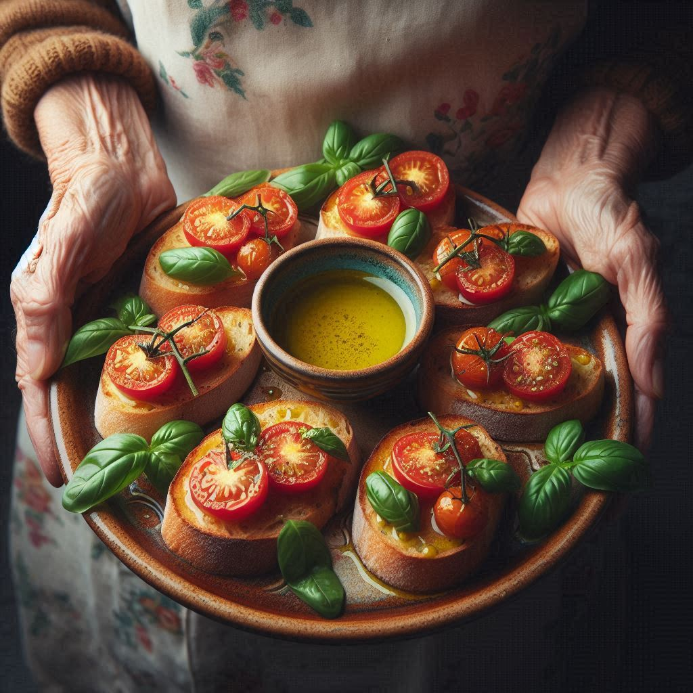
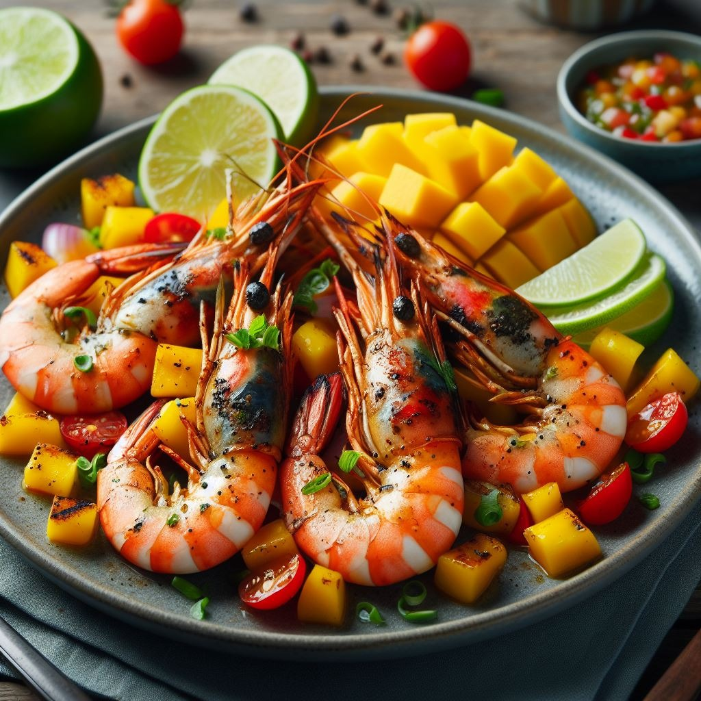

Entradas

Nosso Carpaccio de Salmão com Maracujá é uma entrada sofisticada e refrescante. O salmão fresco é cortado em lâminas finas e disposto artisticamente no prato. O molho de maracujá, feito com suco natural da fruta, proporciona uma explosão de sabor tropical. Para finalizar, adicionamos sementes de maracujá frescas, que conferem uma textura crocante e um toque visual vibrante. Uma combinação perfeita para os amantes de peixe cru e sabores intensos.

Delicie-se com nossa Sopa de Abóbora com Especiarias! Feita com abóbora moranga e japonesa,essa sopa é um verdadeiro abraço em forma de comida. O gengibre ralado e as especiarias, como cúrcuma e páprica picante, proporcionam um sabor picante e terroso, enquanto a cebola e o alho dão um toque aromático. Cozida até que a abóbora fique macia, nossa sopa é processada no liquidificador para obter uma textura suave e aveludada. Sirva com um fio de azeite e decore com salsa fresca.

Nossas Bruschettas com Tomate Fresco são uma entrada irresistível, perfeita para qualquer ocasião. O pão italiano filão é dourado e crocante, enquanto o tomate fresco e os temperos adicionam um sabor vibrante.

Para voce se deleitar com nossos Camarões Grelhados,selecionamos cuidadosamente os frutos do mar para que se mantenham frescos e suculentos. Grelhamos cada camarão até que fiquem dourados e com marcas de churrasco, o molho de manga é uma sinfonia tropical. Mangas maduras são transformadas em um creme aveludado, com um toque de suco de limão fresco para equilibrar a doçura.

Nossas Ostras são colhidas cuidadosamente das águas cristalinas da costa. Elas são servidas em sua concha, ainda banhadas pelo mar. A textura é suave e sedosa, e o sabor é uma sinfonia de salinidade e frescor. O toque cítrico do limão é a companhia perfeita para as ostras. Uma fatia fina de limão é colocada delicadamente sobre cada ostra, liberando seus óleos essenciais e realçando o sabor do mar. O molho mignonette é uma combinação clássica de vinagre, chalotas picadas e pimenta-do-reino. Ele é servido em uma pequena tigela ao lado das ostras. Mergulhe a ostra no molho antes de saboreá-la.